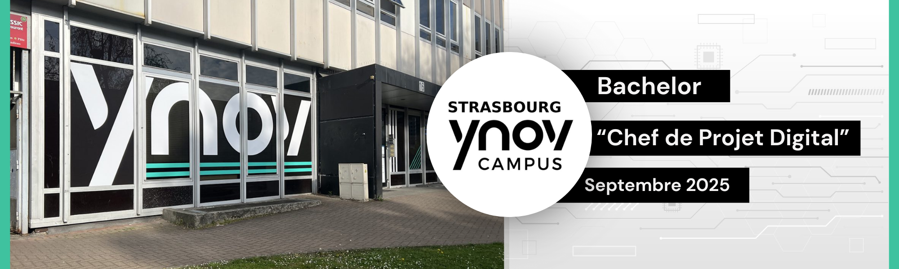
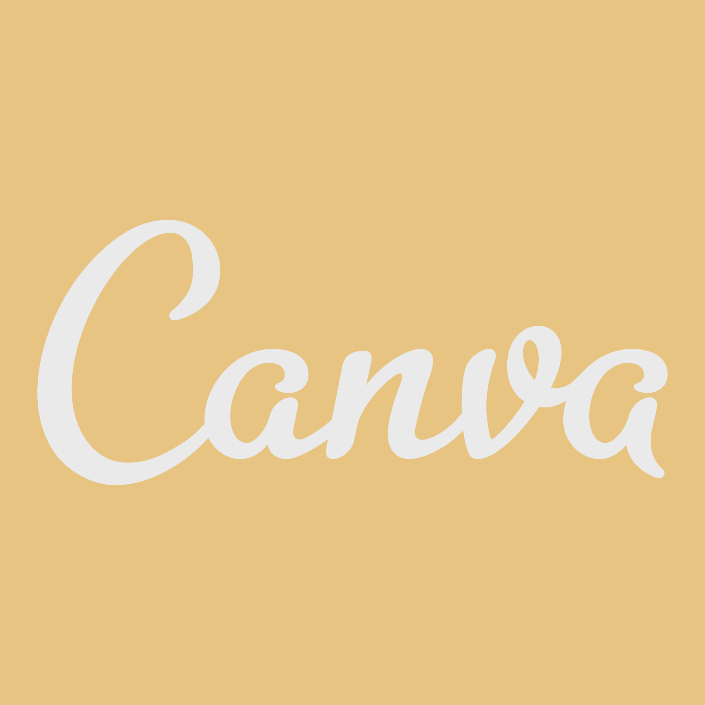
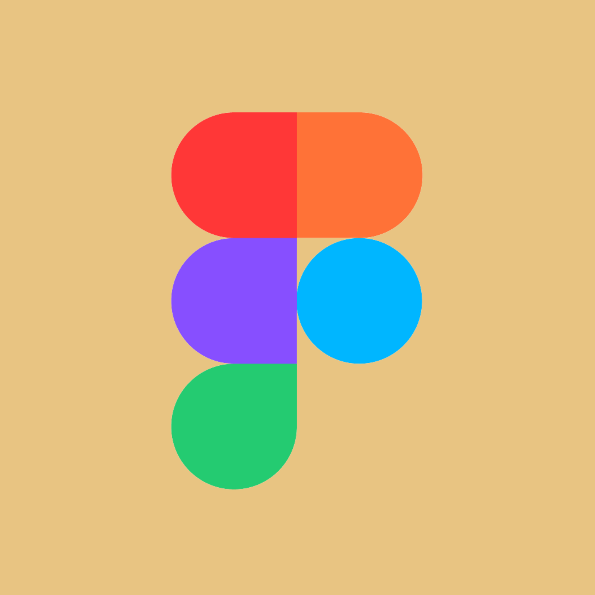
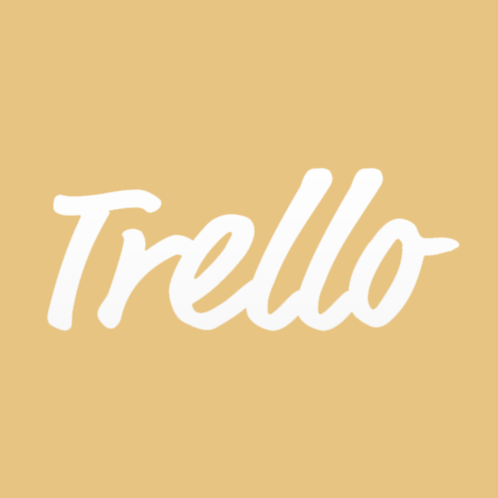
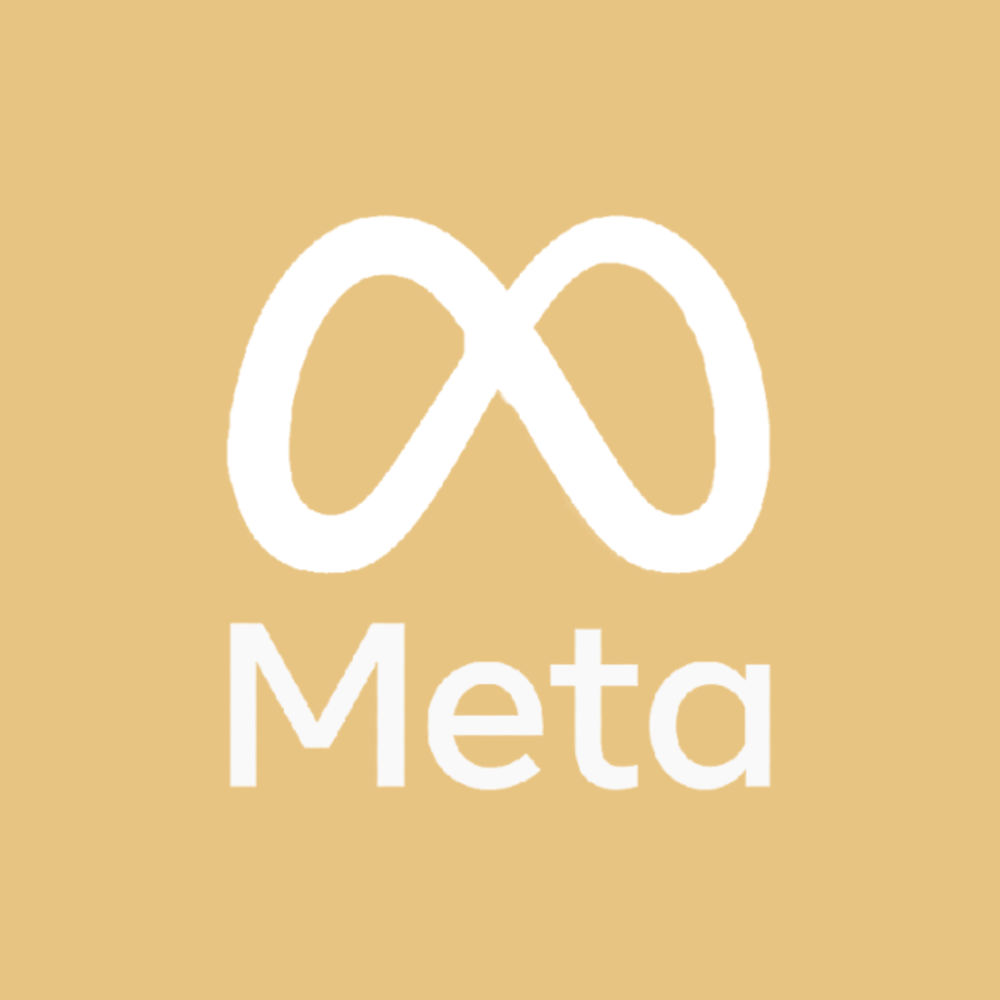

Bachelor “Chef de Projet Digital”
À Ynov Strasbourg, j’ai véritablement plongé dans l’univers du marketing digital et de la communication en passant rapidement de la théorie à la pratique.
J’y ai développé des compétences techniques en création web avec Sublime Text, en conception visuelle et audiovisuelle grâce à la suite Adobe, ainsi qu’en organisation de projet via Trello, tout en apprenant à collaborer efficacement en équipe.
Ces apprentissages ont pris forme à travers plusieurs réalisations concrètes, notamment le projet Oraya présenté dans la section « Mes Créations visuelles », où j’ai construit une identité complète en mêlant direction artistique, cohérence graphique et réflexion stratégique autour d’une marque.
L’école m’a aussi offert l’opportunité de participer à différents événements et challenges (journées portes ouvertes, concours d’éloquence, projets intensifs de 48h avec partenaires professionnels).
Ces expériences ont renforcé mon aisance à l’oral, ma capacité d’adaptation et ma rigueur dans des délais courts, tout en développant mon sens de l’initiative.

Mes compétences techniques







